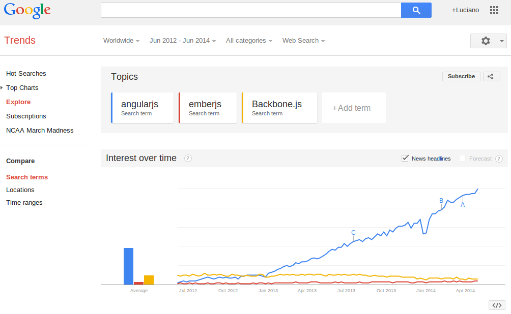
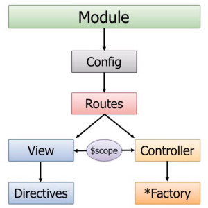
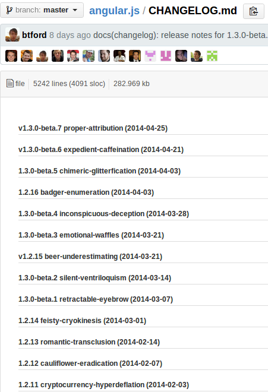

AngularJs Mobile
JsDay 2014 - Verona 14 May
Who Am I?
I'm a software engineer
doing code since 2000

I started doing serious javascript stuff in 2007

Then I moved to architecture and Backend


my first conference (as auditor)
was PHPDay, here in Verona
2012
it changed my life

the second one: march 2013

here I meet

and was love!
I started studying hard

in april I was in barcelona

doing it wrong

do you know this graph?

but then I was involved in


I reached dubai

and with an inspiring lead

and an amazing team

we did it!
the AngularJs version
of the namshi mobile website
in this talk I want to share with you
how we made Rocket Internet in Germany say
WOW!
Who are you?
Question Time
who knows angular?
who use angular?
who use angular for mobile?
Let's start
what is
responsive?
what can be responsive?
layout
images
features
Layout
media queries
Media queries are filters that can be applied to CSS styles.
They make it easy to change styles based on the device, including the display type, width, height, orientation and even resolution.
set your viewport
Images
srcsetattribute orpictureelement?responsiveimages.org
picture elementpicturefill
a BBC solutionImages.js
our solution (the concept):

svg &webp
Feature detect
Useful Resources
mobile issues
don't make them wait!
pretend to be fast
ngCloak
UX instant feedback
create UX with visual/audio feedback and loading routines to prevent dead spots
reduce latency
avoid HTTP calls
reduce latency with angularJs
- angular-cache
- paginate client side to reduce API calls
- preload templates with ng-templates
- batch Network requests to fetch data at the same time (actually this is for saving battery)
reduce dom and javascript parsing
avoid ngRepeat if not needed to reduce CPU and watchers
CSS Performances
right to left
avoid unnecessary selectors
avoid nested selectors
(.field .error .required vs .field-error-required)
avoid CSS3 selectors
avoid css animations
CSS vs Js animation
avoid gradients and co (use sprites)
is not JS slow, jQuery is
ID are the most efficient, universal are the least
- ID - #header
- Class – .header
- Tag – div
- Sibling – div + p, div ~ p
- Child – div > p
- Descendant – div p
- Universal – div *
- Attribute – input[type="text"]
- Pseudo – p:first-child
Javascript optimization
the curse of 300ms
Mobile browsers will wait approximately 300ms from the time that you tap the button to fire the click event.
The reason for this is that the browser is waiting to see if you are actually performing a double tap.
useFastClick
you should test
- test with real devices (even old ones)
- mobile safari remote debbugging
- mobile chrome remote debugging + batarang
- protractor
- SauceLabs
- BrowserStack
general tips for mobile apps 1/2
- disable selct/copy
-webkit-user-select: none; -webkit-touch-callout: none; - disable double tap
- disable overscroll
- enable input text selection (iOS)(be carefull)
-webkit-user-select: text; - better text looking(but slow performances)
text-rendering: optimizeLegibility;
general tips for mobile apps 2/2
- remove glossy lookig buttons in Safaribox-sizing
-webkit-appearance: carret; -webkit-appearance: none; /* alernatively */ - Removing Gray Highlight When Tapping Links (safari)
-webkit-tap-highlight-color: #123456; /* To change it */ -webkit-tap-highlight-color: transparent; /* To remove it */ - Overflow Scrolling
-webkit-overflow-scrolling: touch; - On Fluid Layouts safari will rounds up percentages
- Retina issues
Why Angular?
Awesome
google & community
enanche HTML, CSS and JavaScript
What is angular?
The best part
- Less code well organized
- DI
- Testability
- Directives and reusability
- Promises
- Model View Wathever
- Controller -> $scope <- View
- Services
Why is Angular still imature?
still a WIP (a very fast one)
Why is Angular still imature?
- Wants to own the Dom
- Still not a perfect knowledge about it
- Services, Factories, ServiceProviders:"it's a mess!"
ANGULAR OPTIMIZATIONS
- Don't use filters in views (will be fixed in next versions)
- Watch the number of watches (usebindonce)
- $scope.$on('$destroy') to kill unnecessary callbacks
Angular friends
WHY NOT ngTouch?
Remember the course of 300ms?
It only bind ngClick
Then use FastClick!
or Ionic
storage
- localStorage
- xAuth
- sqlLite
One App to rule them all
if your whole application is totally responsive you can have just one app for every device
Creating and sharing modules
If you decouple your code in several modules you can have as may apps as you want with little code:
- configuration
- bootstrap
- controllers
- views
publish modules as bower dependencies
Hybrid APPS
- Reuse code
- Html5 in a webView
- Cross browser (almost)
- You can put those apps in iOS AppStore or Google Play Store
- Browser apps
- Tv apps
- Car apps
What is cordova/phonegap?
fill the gap between browsers and native device features(geo-location, camera, accelerometers, push notificatuons)
Why cordova?
- Opensource, cross platform, device neutral
- More web than objective-C developers
- In 2011 PhoneGap source contributed to Apache Cordova, Adobe aquires PhoneGap name & developers
- Makes native accessible from javascript
- Build and deploy fast
- Can be used with almost any web framework
- Debug iOs in safari and android with chrome
$ npm install -g cordova
What's bad with Cordova?
Performance
(especially for intensive graphic on old browsers)
Cordova tips
- Don't call Cordova (native) js functions until after deviceready fires (angular-phonegap-ready)
- Build with angular(search mobile tag)
- Wrap call via cordova javascript with btford.phonegap.ready
- Cordova javascript callbacks should employ safeApply (error: $apply already in progress)
ionic
$ sudo apt-get -u install ant- androidSDK(or xCode)
$ npm install -g cordova ionic $ ionic start myApp tabs $ cd myApp $ ionic platform add android $ ionic build android $ ionic emulate android- html + css components:Ionic Docs
- html5 input types: form examples
- angular binding & controllers
- Topcoat
generator-ionic
$ npm install -g generator-ionic
$ mkdir my-ionic-project && cd $_
$ yo ionic
$ grunt serveappGyver
installation
git
python 2.7 or higher
NVM and Node.js
Steroids CLI
Connect the Steroids CLI with your AppGyver account
let's start
$ steroids create myProject$ cd myProjectRunning your project on a real device
Download AppGyver Scanner for iOS or AppGyver Scanner for Android.
Connect your device to the same WLAN as your computer.
$ steroids connect --watchscann the QR
$ steroids generate tutorial beginbugs!
there are some bugs with android 4.4:bug report